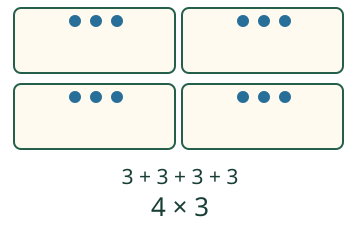
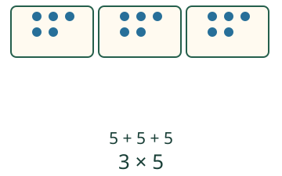

Aava merkitsee eväät lyhyesti.
Kirjoitan yhtä suuret ryhmät kertolaskuna.
Neljä kertaa sama määrä
Neljässä rasiassa on jokaisessa kolme marjaa. Jokainen piste on yksi marja, laatikko koko rasia. 3 + 3 + 3 + 3 kirjoitetaan lyhyesti 4 × 3, luetaan neljä kertaa kolme. 4 kertoo rasioiden määrän ja 3 marjat yhdessä rasiassa. Kertomerkki × yhdistää nämä kaksi tietoa. Tulosta ei tarvitse muistaa ulkoa.

Ryhmittely ja tekijöiden järjestys
Kolmella penkillä istuu viisi sammakkoa kullakin. Kirjoitus on 3 × 5. Samat merkit voi järjestää myös viiteen kolmen ryhmään. Myös 5 × 3 antaa saman kokonaismäärän. Tämän sivun tehtävissä hyväksytään molemmat järjestykset. Kerro silti itsellesi, kumpi luku oli alkuperäisten ryhmien määrä.

Myös tyhjässä rasiassa on määrä
Kolmessa tyhjässä rasiassa on 0 + 0 + 0 merkkiä: 3 × 0. Rasioita on 3, merkkejä ei yhtään. Rasiat eivät muutu kolmeksi merkiksi. Neljässä rasiassa, joissa kussakin on yksi merkki, kirjoitus on 4 × 1.
Mieti: Kaksi kuuden ryhmää. Miksi pelkkä vastaus 12 ei vielä ole pyydetty kertolaskulauseke?
Katso ajatus
12 kertoo kokonaismäärän.2 × 6 näyttää myös ryhmien määrän ja ryhmän koon.6 × 2 kertoo saman kokonaismäärän, ja sekin hyväksytään täällä.
Kirjoita itse
Tutki lisää ja siirrä ajatusta
Viisi kukkapenkkiä, jokaisessa kaksi kukkaa:5 × 2 tai 2 × 5. Nyt ryhmiä ovat kukkapenkit, eivät erilaisten kukkien nimet. Entä jos penkeissä on 2,3 ja 2 kukkaa? Ryhmät eivät ole yhtä suuret. Niitä ei voi kuvata kolmella samalla ryhmän koolla.
Lopuksi: Piirrä kaksi neljän ryhmää. Kirjoita niistä kertolasku. Mitä kumpikin luku tarkoittaa?
Opettajalle ja ilman ruutua
Luokat 1–2. Pakolliset esitiedot M-MUL-01 ja M-ARITH-01. Tavoite on tilanteen muuttaminen kirjoitetuksi kertolaskulausekkeeksi. Tässä vapaa kahden tekijän syöttö on eri teko kuin valmiin lausekkeen valinta tai pelkän tulon kirjoittaminen. Nimet, puhe, nopeus tai ulkoa muistettu kertotaulu eivät ole portteja.
Aseta nappeja yhtä suuriin rasioihin. Pyydä näyttämään ryhmien määrä ja yhden ryhmän koko. Vertaa eri tekijäjärjestyksiä ja sitä, mitä ne kuvassa tarkoittavat. Merkitse paperille toistuva summa ja kertolasku. Näytön pisteet ovat laskettavia merkkejä, eivät esinelajeja.
Tehtävissä ryhmiä on 2–5, ryhmäkoko 0–7; tulosta ei kysytä. Näppäily hyväksyy yksinumeroiset tekijät 0–9 ja yhden kertomerkin; hyväksyntä vaatii juuri tilanteen kaksi tekijää kummassa tahansa järjestyksessä. Samansuuruinen mutta eri tekijöistä tehty tulo ei täytä tämän tehtävän kuvaamispyyntöä. Mallin uudelleenryhmittely on erillistä vapaaehtoista tukea, ei vastauksen muokkaus.
Vaiheittainen toisto korostaa merkintöjen yhteyttä samaan määrään, eikä tarkoita oikean maailman nopeutta. Katsominen tai tuettu kirjoitus ei osoita itsenäisyyttä, laskusujuvuutta, muistamista tai formaalia hallintaa. Tarkistus koskee vain näkyvää nykyistä vastausta. Ei tallennusta, henkilöhistoriaa tai vaikuttavuusväitettä.